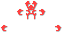

Из Маятника
Кадры, GIF и видеомонтажи из Маятника.
Загрузка кадров…
Как узоры «Зеркалиуса» становятся кадрами, обоями и иллюстрациями.

XORoXORиусКадры, GIF и видеомонтажи из Маятника.
Загрузка кадров…
Бирюзой, янтарём и сиреневым отмечены области, которых касается вертикаль, горизонталь или диагональ. Во всех трёх вариантах исходное поле одно и то же.


Открой кадр 64 на 1024 строках. Включи «Треуг» и поставь ось. В раскраске выбери «Область → По сторонам». Для нулей и единиц используй кнопки «0» и «1». В серии вертикаль проходит по центру, горизонталь — по строке с индексом 640, диагональ пересекает их под 45°.
Цвета предложены через OpenAI API. Области рассчитаны средствами Маятника. Для нулей использован более тёмный оттенок той же палитры.
Кадры 4, 64, 176 и 508 в медной палитре. От кадра к кадру одни треугольники заполняются, другие остаются видны. Вершина и основание доходят до краёв изображения.
Задай 1024 строки и 512 вершин. В «Построении» выбери «ЛевПрав», в «Полях» — «Маятник». Включи вид «Треуг». Ссылка под изображением открывает нужный кадр с выбранной раскраской, «Шрна по Оси» и «Верх».
#4a2859, единица #ffbf6e.#19494e, единица #71efda.PNG 2048 × 1024 сохраняют один пиксель на клетку. В медной и бирюзовой версиях под полем лежит графитовая текстура, созданная в Image API. Фактура видна в PNG.
Ряды золотых треугольников на чёрном. Рисунок взят из поля «Всё поле 5.8», а шаг 4511 подобран по пользовательскому снимку Хаба.

В Хабе открой «Сравнение», выбери XOR, оставь поле 3 (5.8), включи «Прямо» и «Рост». В обоях единицы окрашены в #e5a051. Вариант 4K заполняет экран по высоте и обрезан по бокам.
Зеркало, кодовая волна и ромбы стали отправными точками для GPT Image 2. Композиции, освещение и фактура созданы по текстовым описаниям.

Зеркальный маятник подсказал вертикальный стык, по сторонам которого расходятся цветные клетки.
Открыть зеркало
Из Аниматрицы Code взято движение волны слева направо. В иллюстрации оно передано светящимся фронтом.
Источник в Code Расчётные кадры
Ромбические укладки из обоев «Зеркалиуса» переработаны в крупные цветные грани.
Исходные мотивы